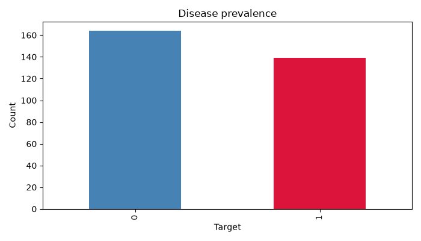
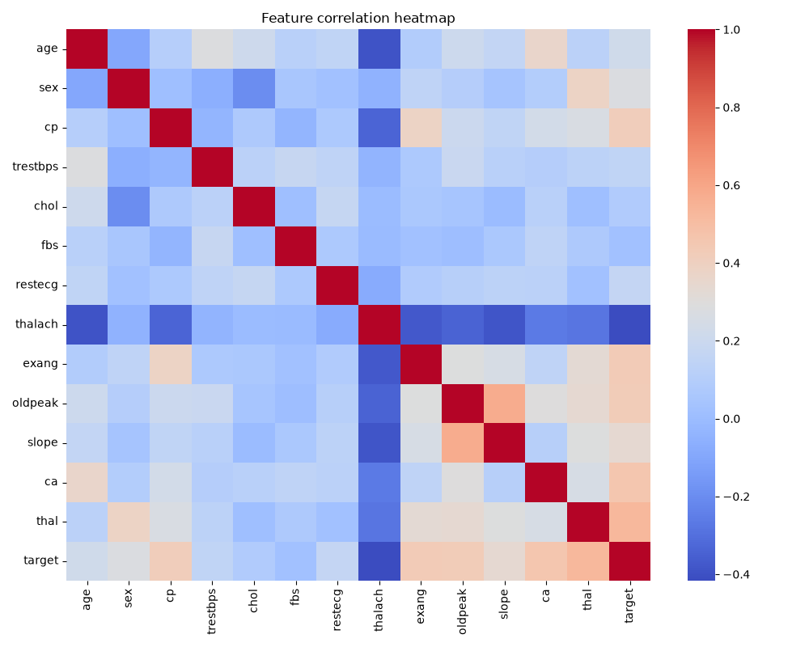
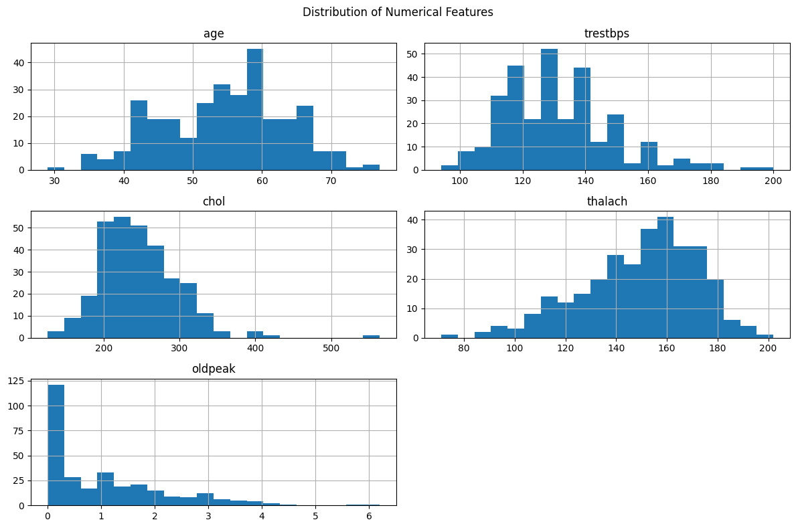
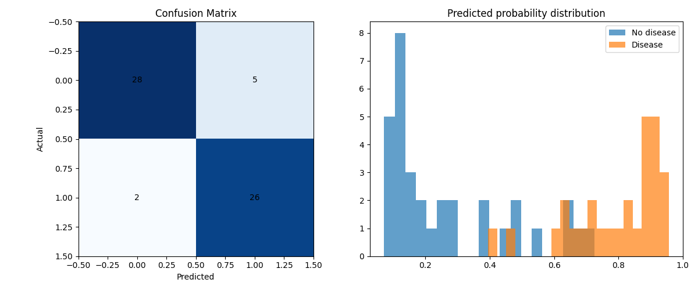
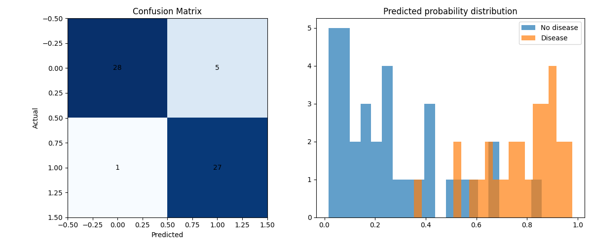

Heart Disease Prediction
MLOps Final Report
/health, /predict and /metrics responses. GitHub Actions run #9 completed successfully, including lint, unit tests and training. The Docker/Kubernetes record is from an earlier run and should be refreshed against the current artifact before submission.Executive Summary
Project overviewThis project implements an end-to-end MLOps workflow for binary classification on the UCI Cleveland Heart Disease dataset. Its objective is to demonstrate repeatability and operational practices around data preparation, exploratory data analysis (EDA), preprocessing, model comparison, experiment tracking, packaging, automated checks, API serving and runtime observability.
The training code compares Logistic Regression and Random Forest. A stratified 80/20 train/test split uses a fixed random state, and five-fold StratifiedKFold cross-validation supports hyperparameter search. The selection criterion is mean cross-validation ROC-AUC. A scikit-learn ColumnTransformer now treats numeric and categorical inputs separately: numeric columns are median-imputed and scaled, while categorical columns are imputed with the most-frequent value and one-hot encoded. The preprocessing steps remain inside the model pipeline to reduce validation leakage.
MLflow records model parameters, cross-validation and held-out test metrics, generated plots and serialized model artifacts. The selected pipeline is saved using joblib and served through FastAPI via /predict, with /health and Prometheus-compatible /metrics endpoints. GitHub Actions runs linting, tests and model training; Docker and local Kubernetes manifests support deployment validation.
Problem Definition
1.1 Objective
Design a reproducible machine-learning service that accepts 13 clinical attributes and classifies a record into a binary target: no disease (0) or disease present (1). The work emphasizes the operational lifecycle rather than only model fitting: dependency management, repeatable training, tracking, testing, serving, containerization and monitoring.
1.2 Problem formulation
| Item | Definition |
|---|---|
| Learning task | Supervised binary classification |
| Dataset | UCI Heart Disease dataset, Cleveland subset |
| Records | 303 records in the processed Cleveland file |
| Predictors | 13 input features |
| Original diagnosis field | Values 0–4 |
| Binary target | 0 remains 0; any original diagnosis value greater than 0 maps to 1 |
| Primary model-selection metric | Mean five-fold cross-validation ROC-AUC |
| Final evaluation | Held-out stratified test split |
1.3 End-to-end lifecycle
Data Acquisition, Cleaning & EDA
2.1 Dataset acquisition
The project uses the processed Cleveland file located at data/raw/heart+disease/processed.cleveland.data. The repository includes a data acquisition/validation script, and the training loader checks that the input has the expected 14 columns. The raw diagnosis field is converted to a binary target before fitting.
2.2 Data cleaning and target transformation
Missing fields represented by ? are read as missing values by pandas. Missing predictors are imputed within the model pipeline rather than by fitting preprocessing globally before the train/test split. The original target is transformed so that value 0 becomes class 0 and all values greater than 0 become class 1.
2.3 EDA completed in the notebook
The saved notebook notebooks/eda.ipynb contains executed outputs for the dataset preview, class proportions, missing-value counts, numeric histograms and correlation heatmap. The processed file has 303 records and 13 predictors; the binarized target contains 164 class-0 records (54.1%) and 139 class-1 records (45.9%). Six predictor values are missing: ca has 4 and thal has 2; no other feature is missing.
Numerical distribution
Histograms cover age, resting blood pressure (trestbps), cholesterol (chol), maximum heart rate (thalach) and ST depression (oldpeak).
Data quality and label balance
The notebook examines missingness and the transformed binary target distribution, supporting decisions about preprocessing and evaluation metrics.
Binary target balance

Feature correlation

Numeric feature distributions

2.4 Why EDA matters
EDA helps identify incomplete records, understand variable scales, confirm the target transformation, and reveal possible imbalance. The findings inform the preprocessing pipeline and the choice to report precision, recall, F1 and ROC-AUC alongside accuracy.
Feature Engineering & Preprocessing
3.1 Feature groups
| Type | Features | Transformation |
|---|---|---|
| Numerical | age, trestbps, chol, thalach, oldpeak | Median imputation, then StandardScaler |
| Categorical / coded categories | sex, cp, fbs, restecg, exang, slope, ca, thal | Most-frequent imputation, then OneHotEncoder |
3.2 Preprocessing architecture
A scikit-learn ColumnTransformer applies feature-type-specific transformations. The numerical pipeline uses SimpleImputer(strategy="median") and StandardScaler. The categorical pipeline uses SimpleImputer(strategy="most_frequent") and OneHotEncoder(handle_unknown="ignore"). Both are embedded in a single model Pipeline.
3.3 Leakage prevention and reproducibility
The split occurs before model fitting. Since imputation, scaling and encoding are steps of the estimator pipeline passed to GridSearchCV, each cross-validation fold fits preprocessing only on its own training fold. The held-out test data is reserved for final evaluation. A fixed random state is used for the train/test split and the shuffled five-fold StratifiedKFold setup.
src/heart_disease/data_pipeline.py, including the numeric/categorical split and one-hot encoding.Model Development & Evaluation
4.1 Candidate models
Logistic Regression provides a linear baseline, while Random Forest offers a nonlinear ensemble model. Both are trained and tuned using the same split strategy and preprocessing approach.
4.2 Hyperparameter search
| Model | Parameter | Search values |
|---|---|---|
| Logistic Regression | C | 0.1, 1.0, 10.0 |
| Logistic Regression | solver | liblinear, lbfgs |
| Random Forest | n_estimators | 100, 200, 300 |
| Random Forest | max_depth | None, 5, 10 |
| Random Forest | min_samples_leaf | 1, 2, 4 |
GridSearchCV evaluates the candidate combinations with five-fold StratifiedKFold. The scoring dictionary includes accuracy, precision, recall, F1 and ROC-AUC, and the search refits the candidate with the highest ROC-AUC. Classifiers use a fixed random state; class weighting is set to balanced.
4.3 Model selection and metrics
Each model family produces its best cross-validation candidate. The overall pipeline is selected by comparing mean five-fold CV ROC-AUC: Logistic Regression scored 0.9031 ± 0.0166, slightly above Random Forest at 0.9016 ± 0.0297, so Logistic Regression is selected. Random Forest has higher held-out accuracy and recall in this split, but the test set is reserved for evaluation and is not used to choose or tune the model.
Latest model results · editable
| Metric | Logistic Regression | Random Forest |
|---|---|---|
| CV accuracy (mean ± SD) | ||
| CV precision (mean ± SD) | ||
| CV recall (mean ± SD) | ||
| CV F1-score (mean ± SD) | ||
| CV ROC-AUC (mean ± SD) | ||
| Test accuracy | ||
| Test precision | ||
| Test recall | ||
| Test F1-score | ||
| Test ROC-AUC |
4.4 Metric interpretation
Accuracy and precision
Accuracy measures the fraction of correct predictions; precision measures the fraction of predicted positives that are truly positive.
Recall and F1
Recall measures how many actual positive records are identified. F1 balances precision and recall through their harmonic mean.
ROC-AUC
ROC-AUC measures ranking/discrimination across classification thresholds and is the primary CV selection criterion in this implementation.
Interpretation limit
Scores describe performance on this dataset/split only. They do not establish clinical safety or generalization to a real-world patient population.
Experiment Tracking & Packaging
5.1 MLflow experiment design
The training code configures the heart-disease-prediction experiment. Separate runs track Logistic Regression and Random Forest searches, followed by a final best-model run. Logged information includes chosen parameters, CV means and standard deviations for accuracy, precision, recall, F1 and ROC-AUC, held-out test metrics, confusion-matrix/probability plots and serialized model artifacts.
5.2 Saved artifacts and selected model
The latest local MLflow run selected Logistic Regression with model__C=0.1 and model__solver=liblinear, based on its higher mean five-fold CV ROC-AUC (0.9031 vs. 0.9016). The final fitted pipeline was saved to artifacts/best_model.joblib. The stratified 20% hold-out contains 61 records; the selected model's confusion matrix is TN=28, FP=5, FN=2, TP=26.
| Artifact | Purpose | Latest local check |
|---|---|---|
artifacts/best_model.joblib | Selected fitted preprocessing + classifier pipeline | Present · 5,110 bytes |
artifacts/logistic_regression.joblib | Best Logistic Regression pipeline | Present · 5,110 bytes |
artifacts/random_forest.joblib | Best Random Forest pipeline | Present · 1,190,411 bytes |
artifacts/logistic_regression_metrics.png | Confusion matrix and predicted-probability distribution | Present · 28,430 bytes |
artifacts/random_forest_metrics.png | Confusion matrix and predicted-probability distribution | Present · 27,390 bytes |
Logistic Regression · held-out results

Random Forest · held-out results

5.3 Reproducible storage behavior
The local MLflow store is configured at file:./mlruns. Machine-specific run metadata is not committed to Git; the repository ignores the local mlruns/ directory. This avoids carrying Windows-specific artifact paths into another environment. A fresh environment should create its own tracking files by rerunning training.
FastAPI Model Serving
6.1 API endpoints
| Method and path | Purpose | Local check |
|---|---|---|
GET /health | Health response for service availability | Passed |
POST /predict | Accepts 13 feature fields as JSON and returns prediction, probability and risk label | Passed |
GET /metrics | Exposes Prometheus-format request and latency metrics | Passed |
6.2 Request fields and sample input
The request comprises age, sex, cp, trestbps, chol, fbs, restecg, thalach, exang, oldpeak, slope, ca and thal. Input field names are aligned with the training feature schema. The following sample is the payload used for the fresh local response check:
6.3 Current local API response
Observed in a fresh local FastAPI TestClient request on 14 October 2026 using the current best_model.joblib and the sample payload above. This verifies the local application path; it is not a new Docker/Kubernetes run and is not a clinical assessment.
Interactive API response editor
The values above are reflected in the response JSON and print view.
6.4 Operational note
The model artifact contains the trained preprocessing and classifier pipeline, allowing the API to receive raw feature values without duplicating preprocessing logic in the serving layer. A successful local request validates the request contract and model load/prediction path; it does not establish clinical usefulness.
CI/CD & Automated Testing
7.1 GitHub Actions workflow
The workflow uses GitHub Actions to automate code validation and model training. It checks out the repository, configures Python 3.11, installs dependencies, runs Ruff, executes pytest and runs the training entry point. A non-zero return from a validation or training command fails the job.
| Stage | Command / implementation | Purpose |
|---|---|---|
| Checkout | actions/checkout@v4 | Fetch source for the workflow run |
| Runtime | Python 3.11 via actions/setup-python@v5 | Standardize CI runtime |
| Dependencies | pip install -r requirements.txt | Install project dependencies |
| Lint | ruff check . | Check style and common code issues |
| Tests | pytest -q | Exercise data/model/API behavior |
| Training | python scripts/train_model.py --data ... --artifact-dir artifacts | Verify the training entry point executes |
7.2 Local test and CI evidence
pytest -q run completed with 7 passed, 14 dependency deprecation warnings, in 3.36s. GitHub Actions run #9 completed successfully on 14 October 2026; its Ruff, pytest and model-training steps all passed on Python 3.11 (commit 1e481b9). The course brief asks for screenshots, so include a screenshot of the run even though the live run link is provided here.7.3 Training evidence and CI artifact retention
The latest local training completed successfully and wrote the five non-empty files listed in Section 5. The GitHub Actions job also completed its training step, but .github/workflows/ci.yml does not upload or retain the generated artifacts as workflow artifacts. Do not claim CI artifact archiving; add an upload-artifact step only if the course submission requires downloadable CI outputs.
Containerization & Kubernetes Deployment
8.1 Docker packaging
The Dockerfile packages FastAPI and runtime dependencies; it copies the repository, including artifacts/best_model.joblib, into the image. deployment_evidence.md records an earlier successful build, container run and API check.
8.2 Kubernetes configuration
The repository includes a Kubernetes Deployment and Service manifest for local cluster execution. The existing deployment evidence describes a local Kind cluster named heartdisease, two replicas, a Service of type LoadBalancer and access through kubectl port-forward.
| Aspect | Documented setup | Interpretation |
|---|---|---|
| Cluster | Local Kind cluster | Local Kubernetes validation, not a public cloud cluster |
| Workload | Deployment with two replicas | Desired replica count defined in manifest |
| Service | LoadBalancer | Recorded external IP was <pending>; no public endpoint was established |
| Endpoint access | kubectl port-forward | Valid local API test path; not proof of public LoadBalancer reachability |
Monitoring, Logging & Observability
9.1 Prometheus-compatible metrics
The API exposes heart_disease_requests_total and heart_disease_request_latency_seconds from /metrics. A fresh local TestClient request returned HTTP 200 and Prometheus-format output. The repository's monitoring/prometheus.yml targets host.docker.internal:8000; this is a local-Docker-oriented target
9.2 Request logging
API middleware logs request timestamps, paths and response status codes. The current implementation writes through a Python FileHandler to logs/api.log, which is useful locally but is not automatically emitted to container standard output; configure a stdout handler or mount/collect the log file for convenient container operations.
9.3 Monitoring scope
This implementation provides lightweight observability appropriate to the academic scope. More mature production operations could add Grafana dashboards, alerts, durable metrics storage, data-quality checks, drift monitoring, access controls and health probes.
/metrics response alone demonstrates exposition, not necessarily successful Prometheus scraping.System Architecture
The architecture below summarizes the source-to-service lifecycle implemented in the repository. It distinguishes model development/experiment tracking from serving and runtime observability.

Assignment Rubric Coverage
The matrix maps each requirement from the assignment instructions to observable repository and run evidence. Local tests, model results and the latest GitHub Actions run are verified; Docker/Kubernetes validation is documented from an earlier model snapshot and must be refreshed before it is presented as current.
| Requirement | Marks | Project implementation / evidence | Status |
|---|---|---|---|
| Data acquisition & EDA | 5 | UCI Cleveland source file, download/validation script, executed notebooks/eda.ipynb, missing-value/class-balance analysis, histograms, heatmap | Implemented |
| Feature engineering & model development | 8 | Mixed numeric/categorical preprocessing, two classifiers, GridSearchCV, five-fold stratified CV, ROC-AUC selection, test metrics | Implemented |
| Experiment tracking | 5 | MLflow experiment, model parameters, CV/test metrics, plots and model artifacts | Implemented |
| Packaging & reproducibility | 7 | joblib pipelines, requirements, pyproject, fixed random seeds, local MLflow ignored by Git | Implemented |
| CI/CD & automated testing | 8 | GitHub Actions, Ruff, pytest and model training; 7 local tests passed | Core checks passed |
| Model containerization | 5 | Dockerfile and previously documented container/API validation | Implemented |
| Production deployment | 7 | Kubernetes Deployment/Service, previously documented local Kind validation with port-forwarding | Implemented |
| Monitoring & logging | 3 | API request logging, Prometheus-compatible endpoint and local metrics endpoint check | Endpoint passed; scrape evidence advisable |
| Documentation & reporting | 2 | README, this report, architecture diagram, deployment evidence and screenshots | Add current screenshots / video |
| Total | 50 | Rubric categories reflect the assignment brief; marks earned remain the evaluator's decision. | |
Setup & Reproducibility
12.1 Local setup
The repository README provides the primary setup sequence. In PowerShell, from the repository root:
If the dataset is already present, verify it is the intended 303-row Cleveland file before retraining. The project README is authoritative if a script's arguments or local paths differ.
12.2 Run the API
Verify /health, submit JSON to /predict, and inspect /metrics. Keep the API process in one terminal and execute requests from another. Docker and Kubernetes commands should be checked against the project README and lab tooling.
12.3 Local validation already performed
| Check | Observed outcome |
|---|---|
pytest -q | 7 passed, 14 dependency deprecation warnings, 3.36 seconds |
| Local training entry point | Completed; MLflow logged both tuned models and selected the higher-CV-ROC-AUC pipeline |
| Artifact directory | Five expected model/plot files present with non-zero size |
FastAPI /health | HTTP 200; {"status":"ok"} |
FastAPI /predict | HTTP 200; prediction 0, class-1 probability 0.455364, label “Low risk” for the documented sample input |
FastAPI /metrics | HTTP 200; Prometheus-format metrics returned |
| GitHub Actions run #9 | Successful; Ruff, pytest and training steps passed on Python 3.11 |
| Current Docker/Kubernetes rerun | Not yet evidenced against the current model artifact |
| Public API URL | None recorded; local testing instructions are provided above |
| Pipeline video | Not present in this repository; submit separately or record its course-portal reference |
Limitations & Future Work
- Dataset scope: The Cleveland subset is small and historical and may not represent modern or diverse patient populations.
- Clinical use: Predictions are for coursework only, not diagnosis or treatment.
- Input validation: The API enforces the 13-field numeric schema and rejects extra fields, but does not enforce clinical ranges or valid enumerated category codes.
- Monitoring depth: Current metrics/logging are lightweight; a scrape target is configured, but successful Prometheus scraping, dashboards, alerting, drift checks and data-quality monitoring still need evidence or implementation.
- Deployment scope: Local Kind and port-forwarding demonstrate local Kubernetes operation, not public-cloud ingress; the documented LoadBalancer address was pending.
- Experiment portability: The local MLflow file store is intentionally not shared through Git. Each environment should generate its own run history, and key report metrics should be saved with the submission.
- CI artifacts: The workflow trains a model but does not upload/retain generated files as GitHub Actions artifacts.
- Operational hardening: A production system would require authentication, access controls, secrets management, health/readiness probes, resource limits, persistent logs, robust model/version governance, security review and regulatory evaluation.